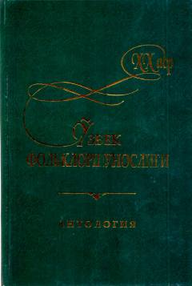

XAXX asr o'zbek folklorshunosligi tarixi va namoyandalarining ilmiy merosiga bag'ishlangan antologiya.
Mazkur antologiya XX asrda o'zbek folklorining shakllanishi va taraqqiyoti, og'zaki ijod durdonalarini to'plash va o'rganish borasida samarali ish olib borgan folklorshunoslarning ilmiy faoliyatini yoritadi. Kitobda xalq og'zaki ijodi namunalarini yozib olish va tadqiq etish tarixiga oid maqolalar jamlangan. Nashr folklorshunos olimlar, filologlar va talabalar uchun mo'ljallangan.